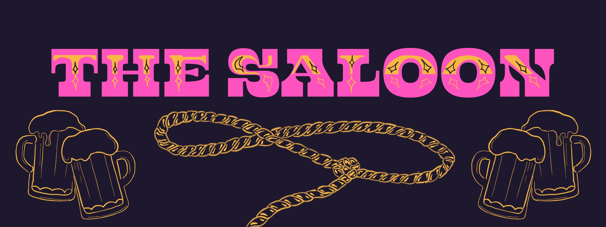
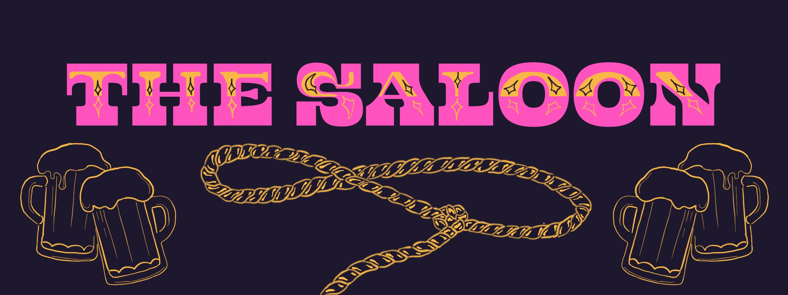

Mayfest Productions
Project Management, Brand Strategy

Website Splash Page Design c/o Geena Vetula
As Co-Director of Promotions, I manage the creation and distribution of all festival promotional material for the nation's largest student-run music festival. I manage deadlines for deliverables & delegate projects to pairs and groups of designers / strategists within our team of 12, leading the creation of a theme-specific brand identity, managing social media strategy across three platforms, and overseeing campaigns such as artist announcements.
I work with tech team to implement content and designs for our website and mobile application, including drafting wireframes and prototypes for a new website, and liaise with our corporate and talent booking committees to create materials for use internally and by festival sponsors in accordance with artist and sponsor contracts.
Multifaceted Event Management: Branding, Strategy, and Tech Integration
Brand Book
Solution
Create a brand standards guidebook for consistency across promotional materials in line with the chosen theme.
Process
Co-chaired theme selection, designed a new ideation process, and collaborated with designer Defne Deda to create the guidebook.
Outcome
Successful theme announcement campaign with record engagement, and teammates enjoying creative freedom.


Alumni Relations
Solution
Showcase Mayfest as a pre-professional organization to increase career opportunities for members.
Process
Created slides highlighting alumni in music & entertainment, built an alumni database, and analyzed career trajectories of past members.
Outcome
An 18-slide pitch deck highlighting organization structure, pre-professional opportunities, budget analysis, and testimonials.

App & Web Content
Website UX
Drafted an improved user experience by optimizing layout, navigation, and content organization.
Mobile App
Collaborated with tech team to create a user-friendly layout and seamless navigation within the Mayfest mobile app.
Dillo Personas
Oversaw content creation for Dillo Personas, unique user personas for Mayfest attendees - a Spotify integration coded by tech team and illustrated by Catherine Zhao.
Merchandising
Ink Tank x Mayfest
- Participated in profit share negotiations and contract finalization with apparel provider Ink Tank
- Directed marketing strategies on social media
- Listed seven clothing items, launching Ink Tank's most profitable project of the year.
Crewing Merch
- Unicolor hoodie designs for 100+ members to be worn the day of the festival, funded by Coca-Cola
- Confronted budgetary issues by sourcing shirts from a new vendor, meeting the marketing and branding needs of a new sponsor interested in purchasing the 100+ shirts for less than $1500
Recruitment 2022
Goal
Compensate for a drop of 30% in organization size and 50% in team size by recruiting new talent.
Process
Designed "Apply To Mayfest" posters and social media content, organized a week-long committee highlight campaign, and created tutorials for new members.
Outcome
Replenished applicant pool, compensated for senior losses, and doubled the size of the Promotions committee.
Promotional Designs
2022
Theme: Return of the Rodeo


 

2021
Theme: Postmodern